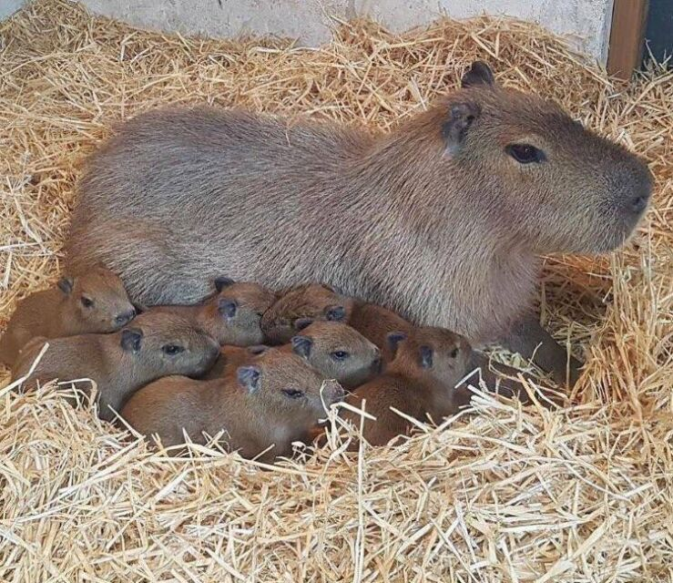

 Capybara memiliki nama ilmiah Hydrochoerus hydrochaeris. Merupakan hewan pengerat yang terbesar di dunia. Beratnya mencapai 50 kg dan panjangnya bisa satu meter. Hewan ini merupakan herbivora yaitu memakan tumbuhan, namun ia tipe pemilih terhadap jenis tumbuhan yang dikonsumsi. Capybara suka makan rumput, buah-buahan, kulit pohon dan tanaman air. Hewan merupakan mamalia yang mahir menyelam, bahkan tahan selama 5 menit di dalam air. Pada bagian kakinya ada bagian selaput tipis sehingga bisa berenang. Asal Capybara dari Amerika Selatan, ia bisa hidup rata-rata 8-10 tahun. Hewan pengerat yang ukuran tubuhnya sebesar babi ini bisa dibilang hewan yang suka beradaptasi. Bahkan, capybara dijuluki hewan paling ramah dan santuy, loh. Kok bisa? Hewan ini sering tertangkap kamera bisa beradaptasi dengan mudah dengan berbagai jenis hewan lainnya, nggak erkecuali dengan jenis predator. Di berbagai video yang beredar di internet memperlihatkan bagaimana interaksi capybara yang tampak santai mencari makan di dekat seekor buaya besar. Bahkan, beberapa waktu lalu capybara juga sempat viral karena beredar video seekor capybara menunggangi buaya. Nggak hanya buaya, hewan berbulu cokelat kehitaman ini juga tampak akrap dengan kura-kura, unggas, hingga ular. Capybara tampaknya nggak punya rasa takut menghadapi hewan-hewan lain, bahkan predator sekalipun. Perilaku capybara yang demikian bikin warganet jadi gemas dan menyebutnya hewan yang nggak punya ‘beban’ hidup~